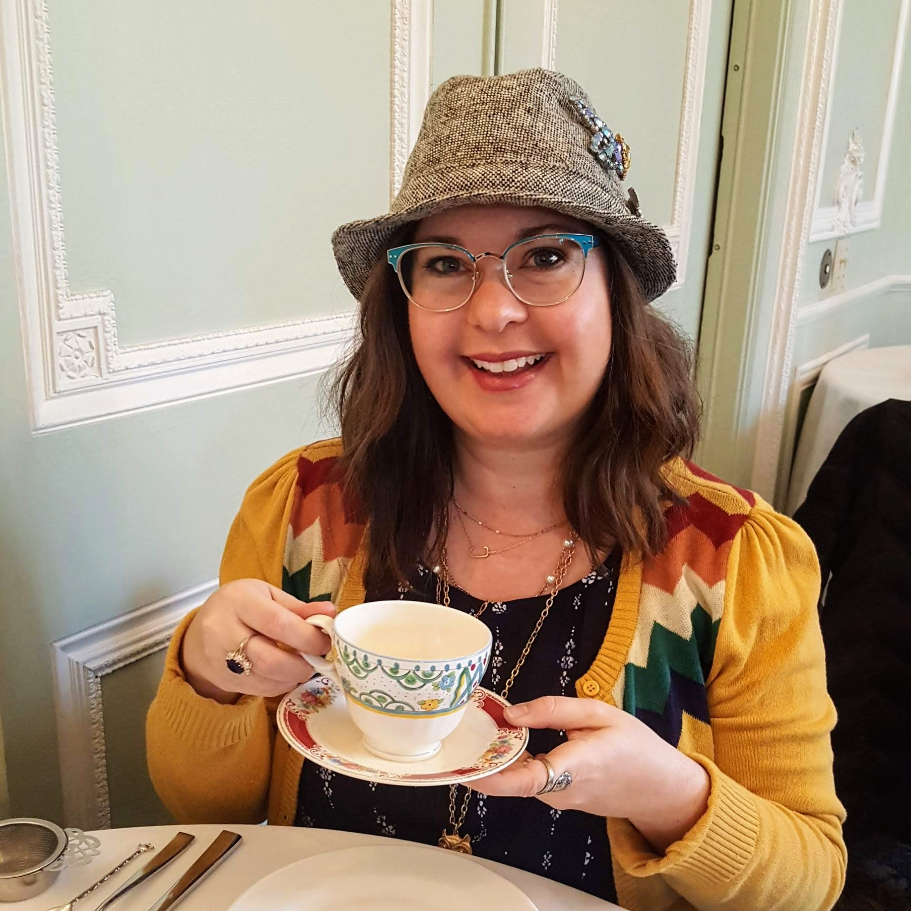
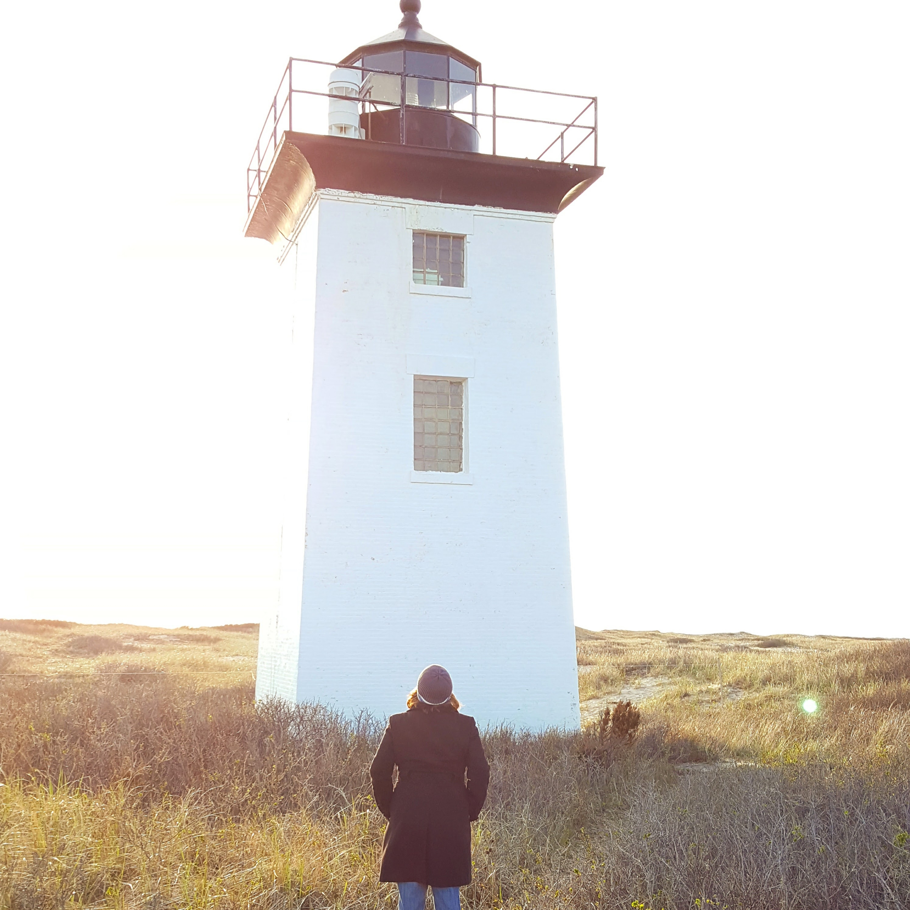
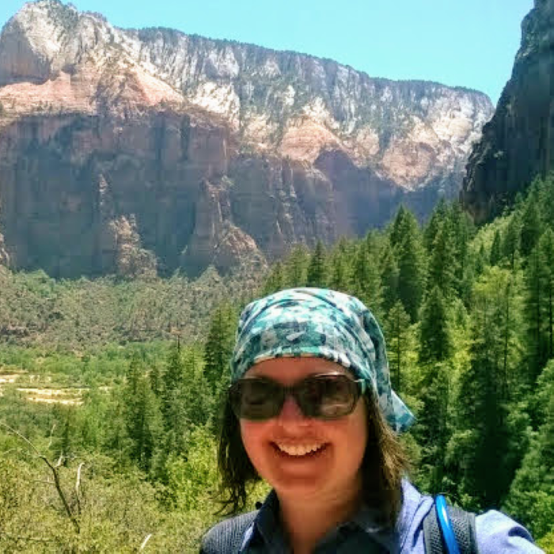

Sipping tea can be an event by itself. Tea is
a joyful part of life. In every season tea is the beginning
of a day, it is the compliment of a book, and a time of day
that brings laughter with a friend.

Adventure happens when it is least expected. Lighthouses
attract entities towards it as a beacon for safe harbor.
This lighthouse whispered from across the long path to
come enjoy the sunset at its base.

Views of mountains never get old. Smiles are endless on walks
in the mountains. Cool breezes waft over the peaks singing
nature's song to any who show appreciation.